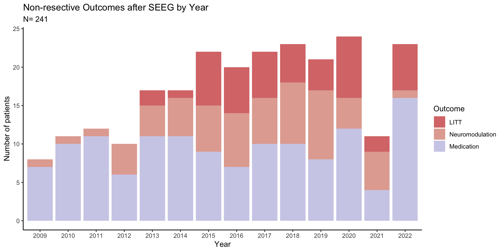

| Unfavorable | Favorable | Unfavorable | Favorable | Unfavorable | Favorable | Favorable | Unfavorable | Favorable | |
|---|---|---|---|---|---|---|---|---|---|
| (N=13) | (N=34) | (N=12) | (N=7) | (N=18) | (N=20) | (N=5) | (N=58) | (N=73) | |
| Epilepsy Duration (years) | |||||||||
| Mean (SD) | 13.1 (9.68) | 15.6 (10.6) | 12.6 (8.12) | 12.7 (8.98) | 15.0 (11.8) | 19.2 (15.3) | 22.9 (11.2) | 17.5 (11.3) | 19.1 (13.3) |
| Median [Min, Max] | 9.00 [1.00, 32.3] | 12.4 [1.03, 51.4] | 10.9 [2.00, 29.5] | 12.0 [2.00, 28.0] | 13.5 [1.00, 48.0] | 14.6 [2.00, 48.1] | 22.8 [8.55, 38.4] | 15.6 [2.00, 47.1] | 15.0 [2.00, 48.1] |
| baseline_sz_freq_per_month_summary | |||||||||
| Mean (SD) | 19.4 (18.5) | 30.0 (102) | 21.5 (36.2) | 103 (117) | 11.1 (21.5) | 85.8 (164) | 28.4 (21.0) | 16.1 (33.0) | 34.9 (58.3) |
| Median [Min, Max] | 14.5 [1.00, 60.0] | 4.50 [0.250, 600] | 4.00 [0.500, 120] | 60.0 [3.00, 300] | 4.00 [0.330, 90.0] | 16.0 [0.160, 600] | 30.0 [2.00, 60.0] | 5.50 [0.250, 180] | 12.0 [0.330, 360] |
| Etiology | |||||||||
| Unknown | 9 (69.2%) | 19 (55.9%) | 8 (66.7%) | 6 (85.7%) | 8 (44.4%) | 16 (80.0%) | 4 (80.0%) | 34 (58.6%) | 45 (61.6%) |
| PVNH | 3 (23.1%) | 12 (35.3%) | 1 (8.3%) | 0 (0%) | 2 (11.1%) | 0 (0%) | 0 (0%) | 1 (1.7%) | 3 (4.1%) |
| MTS | 0 (0%) | 1 (2.9%) | 1 (8.3%) | 1 (14.3%) | 4 (22.2%) | 0 (0%) | 0 (0%) | 3 (5.2%) | 4 (5.5%) |
| Encephalitis | 0 (0%) | 0 (0%) | 1 (8.3%) | 0 (0%) | 2 (11.1%) | 3 (15.0%) | 0 (0%) | 5 (8.6%) | 2 (2.7%) |
| MCD | 0 (0%) | 2 (5.9%) | 0 (0%) | 0 (0%) | 0 (0%) | 0 (0%) | 0 (0%) | 4 (6.9%) | 2 (2.7%) |
| Other | 1 (7.7%) | 0 (0%) | 1 (8.3%) | 0 (0%) | 2 (11.1%) | 1 (5.0%) | 1 (20.0%) | 11 (19.0%) | 17 (23.3%) |
| MRI | |||||||||
| Normal | 8 (61.5%) | 13 (38.2%) | 8 (66.7%) | 6 (85.7%) | 8 (44.4%) | 11 (55.0%) | 4 (80.0%) | 32 (55.2%) | 32 (43.8%) |
| Abnormal | 5 (38.5%) | 21 (61.8%) | 4 (33.3%) | 1 (14.3%) | 10 (55.6%) | 9 (45.0%) | 1 (20.0%) | 26 (44.8%) | 41 (56.2%) |
Tables for FAIL-SEEG
Maksim Parfyonov
2024-09-06
Disclaimer
Disclaimer
I’ve tried to take out the interesting findings from the tables and make into graphs. Happy to generate more after discussion.
Demographics Tables
LITT
|
VNS
|
RNS
|
DBS
|
Medical
|
|||||
|---|---|---|---|---|---|---|---|---|---|
| Unfavorable | Favorable | Unfavorable | Favorable | Unfavorable | Favorable | Favorable | Unfavorable | Favorable | |
| (N=13) | (N=34) | (N=12) | (N=7) | (N=18) | (N=20) | (N=5) | (N=58) | (N=73) | |
| prev_intervention | |||||||||
| Resection, w/ invasive | 2 (15.4%) | 3 (8.8%) | 0 (0%) | 0 (0%) | 2 (11.1%) | 2 (10.0%) | 0 (0%) | 6 (10.3%) | 8 (11.0%) |
| Resection, w/o invasive | 0 (0%) | 5 (14.7%) | 2 (16.7%) | 0 (0%) | 3 (16.7%) | 1 (5.0%) | 1 (20.0%) | 8 (13.8%) | 5 (6.8%) |
| Invasive, w/o resection | 0 (0%) | 2 (5.9%) | 0 (0%) | 0 (0%) | 1 (5.6%) | 5 (25.0%) | 0 (0%) | 2 (3.4%) | 11 (15.1%) |
| Neuromodulation | 2 (15.4%) | 5 (14.7%) | 1 (8.3%) | 1 (14.3%) | 2 (11.1%) | 2 (10.0%) | 0 (0%) | 7 (12.1%) | 6 (8.2%) |
| No previous intervention | 9 (69.2%) | 19 (55.9%) | 9 (75.0%) | 6 (85.7%) | 10 (55.6%) | 10 (50.0%) | 4 (80.0%) | 35 (60.3%) | 43 (58.9%) |
| num_post_op_meds | |||||||||
| Mean (SD) | 3.08 (1.26) | 2.53 (0.929) | 2.42 (0.793) | 2.43 (0.787) | 2.78 (0.808) | 2.50 (0.688) | 2.40 (0.894) | 2.60 (0.972) | 2.66 (0.989) |
| Median [Min, Max] | 3.00 [2.00, 6.00] | 3.00 [1.00, 4.00] | 2.00 [1.00, 4.00] | 2.00 [2.00, 4.00] | 3.00 [1.00, 4.00] | 2.50 [1.00, 4.00] | 3.00 [1.00, 3.00] | 2.50 [1.00, 5.00] | 3.00 [1.00, 5.00] |
| Ictal Onset Zone Category | |||||||||
| Localized | 5 (38.5%) | 16 (47.1%) | 0 (0%) | 0 (0%) | 2 (11.1%) | 6 (30.0%) | 0 (0%) | 10 (17.2%) | 10 (13.7%) |
| Multifocal | 4 (30.8%) | 15 (44.1%) | 7 (58.3%) | 6 (85.7%) | 14 (77.8%) | 11 (55.0%) | 3 (60.0%) | 30 (51.7%) | 38 (52.1%) |
| Failure to localize | 3 (23.1%) | 2 (5.9%) | 5 (41.7%) | 1 (14.3%) | 2 (11.1%) | 2 (10.0%) | 2 (40.0%) | 12 (20.7%) | 17 (23.3%) |
| No spont | 0 (0%) | 0 (0%) | 0 (0%) | 0 (0%) | 0 (0%) | 1 (5.0%) | 0 (0%) | 5 (8.6%) | 6 (8.2%) |
| Generalized | 1 (7.7%) | 1 (2.9%) | 0 (0%) | 0 (0%) | 0 (0%) | 0 (0%) | 0 (0%) | 1 (1.7%) | 2 (2.7%) |
LITT
|
VNS
|
RNS
|
DBS
|
Medical
|
|||||
|---|---|---|---|---|---|---|---|---|---|
| Unfavorable | Favorable | Unfavorable | Favorable | Unfavorable | Favorable | Favorable | Unfavorable | Favorable | |
| (N=13) | (N=34) | (N=12) | (N=7) | (N=18) | (N=20) | (N=5) | (N=58) | (N=73) | |
| Hypothesis | |||||||||
| Temporal | 0 (0%) | 5 (14.7%) | 1 (8.3%) | 0 (0%) | 3 (16.7%) | 3 (15.0%) | 0 (0%) | 10 (17.2%) | 12 (16.4%) |
| Extra-Temporal | 13 (100%) | 29 (85.3%) | 11 (91.7%) | 7 (100%) | 15 (83.3%) | 17 (85.0%) | 5 (100%) | 48 (82.8%) | 61 (83.6%) |
| Interictal concordance to EZ | |||||||||
| Not Concordant/Normal | 6 (46.2%) | 13 (38.2%) | 2 (16.7%) | 3 (42.9%) | 6 (33.3%) | 5 (25.0%) | 2 (40.0%) | 10 (17.2%) | 24 (32.9%) |
| Partially concordant | 4 (30.8%) | 16 (47.1%) | 7 (58.3%) | 4 (57.1%) | 6 (33.3%) | 8 (40.0%) | 3 (60.0%) | 23 (39.7%) | 28 (38.4%) |
| Fully Concordant | 2 (15.4%) | 5 (14.7%) | 3 (25.0%) | 0 (0%) | 6 (33.3%) | 6 (30.0%) | 0 (0%) | 19 (32.8%) | 16 (21.9%) |
| Ictal concordance to EZ | |||||||||
| Not Concordant/Normal | 4 (30.8%) | 13 (38.2%) | 2 (16.7%) | 5 (71.4%) | 2 (11.1%) | 2 (10.0%) | 3 (60.0%) | 4 (6.9%) | 16 (21.9%) |
| Partially concordant | 7 (53.8%) | 18 (52.9%) | 8 (66.7%) | 2 (28.6%) | 11 (61.1%) | 10 (50.0%) | 2 (40.0%) | 36 (62.1%) | 31 (42.5%) |
| Fully Concordant | 1 (7.7%) | 3 (8.8%) | 1 (8.3%) | 0 (0%) | 5 (27.8%) | 7 (35.0%) | 0 (0%) | 12 (20.7%) | 21 (28.8%) |
| PET concordance to EZ | |||||||||
| Not Concordant/Normal | 7 (53.8%) | 12 (35.3%) | 4 (33.3%) | 3 (42.9%) | 6 (33.3%) | 5 (25.0%) | 3 (60.0%) | 20 (34.5%) | 26 (35.6%) |
| Partially concordant | 4 (30.8%) | 17 (50.0%) | 6 (50.0%) | 4 (57.1%) | 11 (61.1%) | 8 (40.0%) | 2 (40.0%) | 27 (46.6%) | 32 (43.8%) |
| Fully Concordant | 1 (7.7%) | 4 (11.8%) | 2 (16.7%) | 0 (0%) | 1 (5.6%) | 6 (30.0%) | 0 (0%) | 4 (6.9%) | 9 (12.3%) |
LITT
|
VNS
|
RNS
|
DBS
|
Medical
|
|||||
|---|---|---|---|---|---|---|---|---|---|
| Unfavorable | Favorable | Unfavorable | Favorable | Unfavorable | Favorable | Favorable | Unfavorable | Favorable | |
| (N=13) | (N=34) | (N=12) | (N=7) | (N=18) | (N=20) | (N=5) | (N=58) | (N=73) | |
| SPECT concordance to EZ | |||||||||
| Not Concordant/Normal | 7 (53.8%) | 10 (29.4%) | 5 (41.7%) | 1 (14.3%) | 2 (11.1%) | 6 (30.0%) | 3 (60.0%) | 16 (27.6%) | 24 (32.9%) |
| Partially concordant | 4 (30.8%) | 13 (38.2%) | 1 (8.3%) | 5 (71.4%) | 10 (55.6%) | 8 (40.0%) | 0 (0%) | 21 (36.2%) | 22 (30.1%) |
| Fully Concordant | 1 (7.7%) | 3 (8.8%) | 0 (0%) | 1 (14.3%) | 1 (5.6%) | 2 (10.0%) | 1 (20.0%) | 4 (6.9%) | 2 (2.7%) |
| MEG concordance to EZ | |||||||||
| Not Concordant/Normal | 6 (46.2%) | 13 (38.2%) | 4 (33.3%) | 4 (57.1%) | 4 (22.2%) | 4 (20.0%) | 3 (60.0%) | 20 (34.5%) | 25 (34.2%) |
| Partially concordant | 5 (38.5%) | 14 (41.2%) | 6 (50.0%) | 2 (28.6%) | 7 (38.9%) | 8 (40.0%) | 2 (40.0%) | 20 (34.5%) | 28 (38.4%) |
| Fully Concordant | 1 (7.7%) | 6 (17.6%) | 1 (8.3%) | 1 (14.3%) | 3 (16.7%) | 4 (20.0%) | 0 (0%) | 7 (12.1%) | 6 (8.2%) |
Over the years…
Intervention by Year
LITT Group
LITT Group Questions
- “Variables: Seizure outcomes (last F/U) in patients that underwent LITT in relation IOZ findings (localized, B/L localized, etc.), etiology, MRI abnormal/normal
- Any distinguishing features in seizure-free group?”
LITT Table
| Unfavorable | Favorable | P-value | |
|---|---|---|---|
| (N=13) | (N=34) | ||
| EZ (new) | |||
| Localized | 5 (38.5%) | 16 (47.1%) | NA |
| Bilateral localized | 0 (0%) | 0 (0%) | |
| Multifocal | 4 (30.8%) | 15 (44.1%) | |
| Not Localized | 4 (30.8%) | 3 (8.8%) | |
| Etiology | |||
| Unknown | 9 (69.2%) | 19 (55.9%) | NA |
| PVNH | 3 (23.1%) | 12 (35.3%) | |
| MTS | 0 (0%) | 1 (2.9%) | |
| Encephalitis | 0 (0%) | 0 (0%) | |
| MCD | 0 (0%) | 2 (5.9%) | |
| Other | 0 (0%) | 0 (0%) | |
| Vascular | 0 (0%) | 0 (0%) | |
| PMG | 1 (7.7%) | 0 (0%) | |
| Trauma | 0 (0%) | 0 (0%) | |
| Genetic | 0 (0%) | 0 (0%) | |
| Anoxic brain injury | 0 (0%) | 0 (0%) | |
| Tumor | 0 (0%) | 0 (0%) | |
| MRI | |||
| Normal | 8 (61.5%) | 13 (38.2%) | 0.202 |
| Abnormal | 5 (38.5%) | 21 (61.8%) | |
Diffuse or non-localizable EZ may be associated with poor LITT outcome
Knowledge of etiology is important in LITT
Abnormal MRI is helpful in LITT patients
Medication-only group
Medication-only group Questions
- “Variables: seizure outcomes (last F/U) in patients in the medication only in relation to last F/U medications (“subtract difference†between pre-SEEG and last F/U list), IOZ findings, etiology, and baseline seizure frequency
- Any distinguishing features in seizure-free group?”
Medication-only Table
| Unfavorable | Favorable | P-value | |
|---|---|---|---|
| (N=58) | (N=73) | ||
| EZ (new) | |||
| Localized | 10 (17.2%) | 10 (13.7%) | 0.87 |
| Bilateral localized | 2 (3.4%) | 4 (5.5%) | |
| Multifocal | 28 (48.3%) | 34 (46.6%) | |
| Not Localized | 18 (31.0%) | 25 (34.2%) | |
| Etiology | |||
| Unknown | 34 (58.6%) | 45 (61.6%) | 0.506 |
| PVNH | 1 (1.7%) | 3 (4.1%) | |
| MTS | 3 (5.2%) | 4 (5.5%) | |
| Encephalitis | 5 (8.6%) | 2 (2.7%) | |
| MCD | 4 (6.9%) | 2 (2.7%) | |
| Other | 2 (3.4%) | 5 (6.8%) | |
| Vascular | 3 (5.2%) | 4 (5.5%) | |
| PMG | 1 (1.7%) | 3 (4.1%) | |
| Trauma | 3 (5.2%) | 1 (1.4%) | |
| Genetic | 0 (0%) | 3 (4.1%) | |
| Anoxic brain injury | 1 (1.7%) | 1 (1.4%) | |
| Tumor | 1 (1.7%) | 0 (0%) | |
| baseline_sz_freq_per_month_summary | |||
| Mean (SD) | 16.1 (33.0) | 34.9 (58.3) | 0.0222 |
| Median [Min, Max] | 5.50 [0.250, 180] | 12.0 [0.330, 360] | |
Medication-only group vs last F/U medication (updated)
| Unfavorable | Favorable | |
|---|---|---|
| (N=58) | (N=73) | |
| ZNS_2 | ||
| 0 | 45 (77.6%) | 52 (71.2%) |
| 1 | 12 (20.7%) | 21 (28.8%) |
| GBP_2 | ||
| 0 | 55 (94.8%) | 70 (95.9%) |
| 1 | 2 (3.4%) | 3 (4.1%) |
| PGB_2 | ||
| 0 | 55 (94.8%) | 70 (95.9%) |
| 1 | 2 (3.4%) | 3 (4.1%) |
| Chlorazepate_2 | ||
| 0 | 57 (98.3%) | 73 (100%) |
| CLZ_2 | ||
| 0 | 57 (98.3%) | 71 (97.3%) |
| 1 | 0 (0%) | 2 (2.7%) |
| Clorazepate_2 | ||
| 0 | 57 (98.3%) | 73 (100%) |
| ESL_2 | ||
| 0 | 53 (91.4%) | 73 (100%) |
| 1 | 4 (6.9%) | 0 (0%) |
| RFM_2 | ||
| 0 | 57 (98.3%) | 72 (98.6%) |
| 1 | 0 (0%) | 1 (1.4%) |
| PB_2 | ||
| 0 | 55 (94.8%) | 72 (98.6%) |
| 1 | 2 (3.4%) | 1 (1.4%) |
| BRV_2 | ||
| 0 | 47 (81.0%) | 68 (93.2%) |
| 1 | 10 (17.2%) | 5 (6.8%) |
| CZP_2 | ||
| 0 | 54 (93.1%) | 67 (91.8%) |
| 1 | 3 (5.2%) | 6 (8.2%) |
| LCM_2 | ||
| 0 | 44 (75.9%) | 43 (58.9%) |
| 1 | 13 (22.4%) | 30 (41.1%) |
| Aptiom_2 | ||
| 0 | 57 (98.3%) | 73 (100%) |
| CNB_2 | ||
| 0 | 48 (82.8%) | 66 (90.4%) |
| 1 | 9 (15.5%) | 7 (9.6%) |
| LTG_2 | ||
| 0 | 31 (53.4%) | 48 (65.8%) |
| 1 | 26 (44.8%) | 25 (34.2%) |
| LEV_2 | ||
| 0 | 38 (65.5%) | 54 (74.0%) |
| 1 | 19 (32.8%) | 19 (26.0%) |
| FBM_2 | ||
| 0 | 55 (94.8%) | 70 (95.9%) |
| 1 | 2 (3.4%) | 3 (4.1%) |
| RUF_2 | ||
| 0 | 57 (98.3%) | 73 (100%) |
| TPM_2 | ||
| 0 | 54 (93.1%) | 62 (84.9%) |
| 1 | 3 (5.2%) | 11 (15.1%) |
| VPA_2 | ||
| 0 | 54 (93.1%) | 67 (91.8%) |
| 1 | 3 (5.2%) | 6 (8.2%) |
| PER_2 | ||
| 0 | 55 (94.8%) | 64 (87.7%) |
| 1 | 2 (3.4%) | 9 (12.3%) |
| BR_2 | ||
| 0 | 47 (81.0%) | 68 (93.2%) |
| 1 | 10 (17.2%) | 5 (6.8%) |
| CLB_2 | ||
| 0 | 36 (62.1%) | 46 (63.0%) |
| 1 | 21 (36.2%) | 27 (37.0%) |
| PHT_2 | ||
| 0 | 54 (93.1%) | 71 (97.3%) |
| 1 | 3 (5.2%) | 2 (2.7%) |
| Primidone_2 | ||
| 0 | 57 (98.3%) | 73 (100%) |
| KLN_2 | ||
| 0 | 57 (98.3%) | 73 (100%) |
| CBZ_2 | ||
| 0 | 51 (87.9%) | 70 (95.9%) |
| 1 | 6 (10.3%) | 3 (4.1%) |
| VGB_2 | ||
| 0 | 57 (98.3%) | 72 (98.6%) |
| 1 | 0 (0%) | 1 (1.4%) |
| OXC_2 | ||
| 0 | 50 (86.2%) | 64 (87.7%) |
| 1 | 7 (12.1%) | 9 (12.3%) |
| CBD_2 | ||
| 0 | 54 (93.1%) | 70 (95.9%) |
| 1 | 3 (5.2%) | 3 (4.1%) |
Medication-only group vs difference in medication (updated)
Medical
|
||
|---|---|---|
| Unfavorable | Favorable | |
| (N=58) | (N=73) | |
| ZNS_diff | ||
| -1 | 5 (8.6%) | 9 (12.3%) |
| 0 | 47 (81.0%) | 57 (78.1%) |
| 1 | 5 (8.6%) | 7 (9.6%) |
| GBP_diff | ||
| 0 | 55 (94.8%) | 70 (95.9%) |
| 1 | 2 (3.4%) | 3 (4.1%) |
| PGB_diff | ||
| -1 | 1 (1.7%) | 1 (1.4%) |
| 0 | 56 (96.6%) | 70 (95.9%) |
| 1 | 0 (0%) | 2 (2.7%) |
| Chlorazepate_diff | ||
| -1 | 1 (1.7%) | 0 (0%) |
| 0 | 56 (96.6%) | 73 (100%) |
| CLZ_diff | ||
| -1 | 0 (0%) | 3 (4.1%) |
| 0 | 57 (98.3%) | 70 (95.9%) |
| Clorazepate_diff | ||
| 0 | 57 (98.3%) | 73 (100%) |
| ESL_diff | ||
| 0 | 55 (94.8%) | 73 (100%) |
| 1 | 2 (3.4%) | 0 (0%) |
| RFM_diff | ||
| 0 | 57 (98.3%) | 72 (98.6%) |
| 1 | 0 (0%) | 1 (1.4%) |
| PB_diff | ||
| -1 | 0 (0%) | 2 (2.7%) |
| 0 | 56 (96.6%) | 70 (95.9%) |
| 1 | 1 (1.7%) | 1 (1.4%) |
| BRV_diff | ||
| 0 | 51 (87.9%) | 71 (97.3%) |
| 1 | 6 (10.3%) | 2 (2.7%) |
| CZP_diff | ||
| -1 | 1 (1.7%) | 3 (4.1%) |
| 0 | 53 (91.4%) | 66 (90.4%) |
| 1 | 3 (5.2%) | 4 (5.5%) |
| LCM_diff | ||
| -1 | 7 (12.1%) | 8 (11.0%) |
| 0 | 47 (81.0%) | 54 (74.0%) |
| 1 | 3 (5.2%) | 11 (15.1%) |
| Aptiom_diff | ||
| 0 | 57 (98.3%) | 73 (100%) |
| CNB_diff | ||
| -1 | 0 (0%) | 1 (1.4%) |
| 0 | 49 (84.5%) | 65 (89.0%) |
| 1 | 8 (13.8%) | 7 (9.6%) |
| LTG_diff | ||
| -1 | 4 (6.9%) | 5 (6.8%) |
| 0 | 50 (86.2%) | 65 (89.0%) |
| 1 | 3 (5.2%) | 3 (4.1%) |
| LEV_diff | ||
| -1 | 5 (8.6%) | 12 (16.4%) |
| 0 | 50 (86.2%) | 57 (78.1%) |
| 1 | 2 (3.4%) | 4 (5.5%) |
| FBM_diff | ||
| -1 | 0 (0%) | 1 (1.4%) |
| 0 | 57 (98.3%) | 71 (97.3%) |
| 1 | 0 (0%) | 1 (1.4%) |
| RUF_diff | ||
| -1 | 0 (0%) | 2 (2.7%) |
| 0 | 57 (98.3%) | 71 (97.3%) |
| TPM_diff | ||
| -1 | 4 (6.9%) | 3 (4.1%) |
| 0 | 53 (91.4%) | 66 (90.4%) |
| 1 | 0 (0%) | 4 (5.5%) |
| VPA_diff | ||
| -1 | 2 (3.4%) | 2 (2.7%) |
| 0 | 52 (89.7%) | 65 (89.0%) |
| 1 | 3 (5.2%) | 6 (8.2%) |
| PER_diff | ||
| 0 | 56 (96.6%) | 69 (94.5%) |
| 1 | 1 (1.7%) | 4 (5.5%) |
| BR_diff | ||
| -1 | 0 (0%) | 1 (1.4%) |
| 0 | 51 (87.9%) | 70 (95.9%) |
| 1 | 6 (10.3%) | 2 (2.7%) |
| CLB_diff | ||
| -1 | 3 (5.2%) | 5 (6.8%) |
| 0 | 49 (84.5%) | 53 (72.6%) |
| 1 | 5 (8.6%) | 15 (20.5%) |
| PHT_diff | ||
| -1 | 3 (5.2%) | 3 (4.1%) |
| 0 | 54 (93.1%) | 69 (94.5%) |
| 1 | 0 (0%) | 1 (1.4%) |
| Primidone_diff | ||
| -1 | 0 (0%) | 1 (1.4%) |
| 0 | 57 (98.3%) | 72 (98.6%) |
| KLN_diff | ||
| -1 | 1 (1.7%) | 1 (1.4%) |
| 0 | 56 (96.6%) | 72 (98.6%) |
| CBZ_diff | ||
| -1 | 6 (10.3%) | 1 (1.4%) |
| 0 | 51 (87.9%) | 71 (97.3%) |
| 1 | 0 (0%) | 1 (1.4%) |
| VGB_diff | ||
| 0 | 57 (98.3%) | 73 (100%) |
| OXC_diff | ||
| -1 | 1 (1.7%) | 3 (4.1%) |
| 0 | 54 (93.1%) | 68 (93.2%) |
| 1 | 2 (3.4%) | 2 (2.7%) |
| CBD_2 | ||
| 0 | 54 (93.1%) | 70 (95.9%) |
| 1 | 3 (5.2%) | 3 (4.1%) |
Localization does not predict outcome in medical group
Patients with genetic etiology in medical group did well, but small N
Higher baseline SZ frequency in favorable medical group, likely driven by outliers
No single ASM is associated with significantly higher odds of favorable outcome
Characteristic |
OR 1 |
95% CI 1 |
p-value |
|---|---|---|---|
| ZNS_2 | |||
| 0 | — | — | |
| 1 | 1.57 | 0.58, 4.34 | 0.4 |
| GBP_2 | |||
| 0 | — | — | |
| 1 | 0.88 | 0.11, 8.33 | >0.9 |
| PGB_2 | |||
| 0 | — | — | |
| 1 | 1.59 | 0.17, 16.5 | 0.7 |
| CLZ_2 | |||
| 0 | — | — | |
| 1 | 35,716,853 | 0.00, |
>0.9 |
| ESL_2 | |||
| 0 | — | — | |
| 1 | 0.00 | >0.9 | |
| PB_2 | |||
| 0 | — | — | |
| 1 | 0.23 | 0.01, 3.41 | 0.3 |
| BRV_2 | |||
| 0 | — | — | |
| 1 | 0.27 | 0.06, 1.08 | 0.073 |
| CZP_2 | |||
| 0 | — | — | |
| 1 | 2.14 | 0.39, 17.0 | 0.4 |
| LCM_2 | |||
| 0 | — | — | |
| 1 | 2.47 | 0.95, 6.76 | 0.069 |
| CNB_2 | |||
| 0 | — | — | |
| 1 | 0.61 | 0.16, 2.21 | 0.4 |
| LTG_2 | |||
| 0 | — | — | |
| 1 | 0.53 | 0.20, 1.36 | 0.2 |
| LEV_2 | |||
| 0 | — | — | |
| 1 | 0.59 | 0.22, 1.55 | 0.3 |
| FBM_2 | |||
| 0 | — | — | |
| 1 | 1.18 | 0.10, 29.8 | >0.9 |
| TPM_2 | |||
| 0 | — | — | |
| 1 | 2.78 | 0.68, 14.5 | 0.2 |
| VPA_2 | |||
| 0 | — | — | |
| 1 | 1.36 | 0.27, 8.40 | 0.7 |
| PER_2 | |||
| 0 | — | — | |
| 1 | 2.14 | 0.41, 16.5 | 0.4 |
| BR_2 | |||
| 0 | — | — | |
| 1 | |||
| CLB_2 | |||
| 0 | — | — | |
| 1 | 0.76 | 0.30, 1.90 | 0.6 |
| PHT_2 | |||
| 0 | — | — | |
| 1 | 0.35 | 0.03, 2.96 | 0.3 |
| CBZ_2 | |||
| 0 | — | — | |
| 1 | 0.38 | 0.06, 2.02 | 0.3 |
| VGB_2 | |||
| 0 | — | — | |
| 1 | 11,863,052 | 0.00, |
>0.9 |
| OXC_2 | |||
| 0 | — | — | |
| 1 | 0.63 | 0.17, 2.30 | 0.5 |
| CBD_2 | |||
| 0 | — | — | |
| 1 | 2.74 | 0.31, 32.9 | 0.4 |
| 1
OR = Odds Ratio, CI = Confidence Interval |
|||
Previous Intervention
Previous Intervention Question
- “Variables: seizure outcomes (last F/U), etiology, IOZ findings, treatment modality recommendations, hypothesis in relation to previous intervention- breakdown into resection (w/ or w/o invasive), invasive only (w/o resection), and neuromodulation”
Previous Intervention Table
| N | Y | P-value | |
|---|---|---|---|
| (N=145) | (N=95) | ||
| prev_intervention | |||
| Resection, w/ invasive | 0 (0%) | 23 (24.2%) | <0.001 |
| Resection, w/o invasive | 0 (0%) | 25 (26.3%) | |
| Invasive, w/o resection | 0 (0%) | 21 (22.1%) | |
| Neuromodulation | 0 (0%) | 26 (27.4%) | |
| No previous intervention | 145 (100%) | 0 (0%) | |
| Favorable Outcome | |||
| Unfavorable | 63 (43.4%) | 38 (40.0%) | 0.69 |
| Favorable | 82 (56.6%) | 57 (60.0%) | |
| Etiology | |||
| Unknown | 100 (69.0%) | 49 (51.6%) | 0.023 |
| PVNH | 15 (10.3%) | 7 (7.4%) | |
| MTS | 5 (3.4%) | 9 (9.5%) | |
| Encephalitis | 5 (3.4%) | 8 (8.4%) | |
| MCD | 3 (2.1%) | 5 (5.3%) | |
| Other | 17 (11.7%) | 17 (17.9%) | |
| EZ (new) | |||
| Localized | 29 (20.0%) | 20 (21.1%) | 0.0745 |
| Bilateral localized | 4 (2.8%) | 7 (7.4%) | |
| Multifocal | 79 (54.5%) | 38 (40.0%) | |
| Not Localized | 33 (22.8%) | 30 (31.6%) | |
| Intervention | |||
| LITT | 28 (19.3%) | 19 (20.0%) | 0.345 |
| VNS | 15 (10.3%) | 4 (4.2%) | |
| RNS | 20 (13.8%) | 18 (18.9%) | |
| DBS | 4 (2.8%) | 1 (1.1%) | |
| Medical | 78 (53.8%) | 53 (55.8%) | |
| Hypothesis | |||
| Temporal | 22 (15.2%) | 12 (12.6%) | 0.705 |
| Extra-Temporal | 123 (84.8%) | 83 (87.4%) | |
| Hypothesis (Detailed) | |||
| F | 13 (9.0%) | 3 (3.2%) | 0.193 |
| F+P | 11 (7.6%) | 6 (6.3%) | |
| F+T | 5 (3.4%) | 2 (2.1%) | |
| P+O | 6 (4.1%) | 3 (3.2%) | |
| PeriC | 2 (1.4%) | 3 (3.2%) | |
| PeriC+PeriS | 1 (0.7%) | 2 (2.1%) | |
| PeriS | 15 (10.3%) | 18 (18.9%) | |
| T | 22 (15.2%) | 12 (12.6%) | |
| T+O | 3 (2.1%) | 0 (0%) | |
| T+P | 10 (6.9%) | 4 (4.2%) | |
| T+PeriS | 39 (26.9%) | 35 (36.8%) | |
| TPO | 18 (12.4%) | 7 (7.4%) | |
Previous Intervention Table Detailed
| Resection, w/ invasive | Resection, w/o invasive | Invasive, w/o resection | Neuromodulation | No previous intervention | P-value | |
|---|---|---|---|---|---|---|
| (N=23) | (N=25) | (N=21) | (N=26) | (N=145) | ||
| Favorable Outcome | ||||||
| Unfavorable | 10 (43.5%) | 13 (52.0%) | 3 (14.3%) | 12 (46.2%) | 63 (43.4%) | 0.0885 |
| Favorable | 13 (56.5%) | 12 (48.0%) | 18 (85.7%) | 14 (53.8%) | 82 (56.6%) | |
| Etiology | ||||||
| Unknown | 14 (60.9%) | 9 (36.0%) | 12 (57.1%) | 14 (53.8%) | 100 (69.0%) | 0.027 |
| PVNH | 1 (4.3%) | 2 (8.0%) | 3 (14.3%) | 1 (3.8%) | 15 (10.3%) | |
| MTS | 0 (0%) | 6 (24.0%) | 2 (9.5%) | 1 (3.8%) | 5 (3.4%) | |
| Encephalitis | 2 (8.7%) | 2 (8.0%) | 2 (9.5%) | 2 (7.7%) | 5 (3.4%) | |
| MCD | 1 (4.3%) | 1 (4.0%) | 1 (4.8%) | 2 (7.7%) | 3 (2.1%) | |
| Other | 5 (21.7%) | 5 (20.0%) | 1 (4.8%) | 6 (23.1%) | 17 (11.7%) | |
| EZ (new) | ||||||
| Localized | 4 (17.4%) | 6 (24.0%) | 5 (23.8%) | 5 (19.2%) | 29 (20.0%) | 0.187 |
| Bilateral localized | 0 (0%) | 4 (16.0%) | 2 (9.5%) | 1 (3.8%) | 4 (2.8%) | |
| Multifocal | 10 (43.5%) | 9 (36.0%) | 8 (38.1%) | 11 (42.3%) | 79 (54.5%) | |
| Not Localized | 9 (39.1%) | 6 (24.0%) | 6 (28.6%) | 9 (34.6%) | 33 (22.8%) | |
| Intervention | ||||||
| LITT | 5 (21.7%) | 5 (20.0%) | 2 (9.5%) | 7 (26.9%) | 28 (19.3%) | 0.769 |
| VNS | 0 (0%) | 2 (8.0%) | 0 (0%) | 2 (7.7%) | 15 (10.3%) | |
| RNS | 4 (17.4%) | 4 (16.0%) | 6 (28.6%) | 4 (15.4%) | 20 (13.8%) | |
| DBS | 0 (0%) | 1 (4.0%) | 0 (0%) | 0 (0%) | 4 (2.8%) | |
| Medical | 14 (60.9%) | 13 (52.0%) | 13 (61.9%) | 13 (50.0%) | 78 (53.8%) | |
| Hypothesis | ||||||
| Temporal | 2 (8.7%) | 6 (24.0%) | 2 (9.5%) | 2 (7.7%) | 22 (15.2%) | 0.419 |
| Extra-Temporal | 21 (91.3%) | 19 (76.0%) | 19 (90.5%) | 24 (92.3%) | 123 (84.8%) | |
| Hypothesis (Detailed) | ||||||
| F | 0 (0%) | 1 (4.0%) | 0 (0%) | 2 (7.7%) | 13 (9.0%) | 0.763 |
| F+P | 2 (8.7%) | 1 (4.0%) | 1 (4.8%) | 2 (7.7%) | 11 (7.6%) | |
| F+T | 0 (0%) | 1 (4.0%) | 0 (0%) | 1 (3.8%) | 5 (3.4%) | |
| P+O | 1 (4.3%) | 0 (0%) | 0 (0%) | 2 (7.7%) | 6 (4.1%) | |
| PeriC | 1 (4.3%) | 1 (4.0%) | 0 (0%) | 1 (3.8%) | 2 (1.4%) | |
| PeriC+PeriS | 1 (4.3%) | 0 (0%) | 1 (4.8%) | 0 (0%) | 1 (0.7%) | |
| PeriS | 7 (30.4%) | 3 (12.0%) | 4 (19.0%) | 4 (15.4%) | 15 (10.3%) | |
| T | 2 (8.7%) | 6 (24.0%) | 2 (9.5%) | 2 (7.7%) | 22 (15.2%) | |
| T+O | 0 (0%) | 0 (0%) | 0 (0%) | 0 (0%) | 3 (2.1%) | |
| T+P | 0 (0%) | 2 (8.0%) | 1 (4.8%) | 1 (3.8%) | 10 (6.9%) | |
| T+PeriS | 7 (30.4%) | 10 (40.0%) | 10 (47.6%) | 8 (30.8%) | 39 (26.9%) | |
| TPO | 2 (8.7%) | 0 (0%) | 2 (9.5%) | 3 (11.5%) | 18 (12.4%) | |
History of intervention does not seem to affect outcome of intervention

Looking closer at previous intervention…
Pre-Implantation Hypothesis
Pre-Implantation Hypothesis - Question
- “Variables: Primary pre-implantation hypothesis in relation to seizure outcomes (last f/u), treatment modality, IOZ findings, and non-invasive concordance.”
Pre-Implantation Hypothesis Table (1/2)
| Temporal | Extra-Temporal | P-value | |
|---|---|---|---|
| (N=34) | (N=206) | ||
| prev_intervention | |||
| Resection, w/ invasive | 2 (5.9%) | 21 (10.2%) | 0.422 |
| Resection, w/o invasive | 6 (17.6%) | 19 (9.2%) | |
| Invasive, w/o resection | 2 (5.9%) | 19 (9.2%) | |
| Neuromodulation | 2 (5.9%) | 24 (11.7%) | |
| No previous intervention | 22 (64.7%) | 123 (59.7%) | |
| Favorable Outcome | |||
| Unfavorable | 14 (41.2%) | 87 (42.2%) | 1 |
| Favorable | 20 (58.8%) | 119 (57.8%) | |
| Etiology | |||
| Unknown | 20 (58.8%) | 129 (62.6%) | 0.672 |
| PVNH | 4 (11.8%) | 18 (8.7%) | |
| MTS | 4 (11.8%) | 10 (4.9%) | |
| Encephalitis | 1 (2.9%) | 12 (5.8%) | |
| MCD | 1 (2.9%) | 7 (3.4%) | |
| Other | 4 (11.8%) | 30 (14.6%) | |
| EZ (new) | |||
| Localized | 11 (32.4%) | 38 (18.4%) | 0.0555 |
| Bilateral localized | 3 (8.8%) | 8 (3.9%) | |
| Multifocal | 16 (47.1%) | 101 (49.0%) | |
| Not Localized | 4 (11.8%) | 59 (28.6%) | |
| Intervention | |||
| LITT | 5 (14.7%) | 42 (20.4%) | 0.51 |
| VNS | 1 (2.9%) | 18 (8.7%) | |
| RNS | 6 (17.6%) | 32 (15.5%) | |
| DBS | 0 (0%) | 5 (2.4%) | |
| Medical | 22 (64.7%) | 109 (52.9%) | |
Pre-Implantation Hypothesis Table (2/2)
| F | F+P | F+T | P+O | PeriC | PeriC+PeriS | PeriS | T | T+O | T+P | T+PeriS | TPO | P-value | |
|---|---|---|---|---|---|---|---|---|---|---|---|---|---|
| (N=16) | (N=17) | (N=7) | (N=9) | (N=5) | (N=3) | (N=33) | (N=34) | (N=3) | (N=14) | (N=74) | (N=25) | ||
| prev_intervention | |||||||||||||
| Resection, w/ invasive | 0 (0%) | 2 (11.8%) | 0 (0%) | 1 (11.1%) | 1 (20.0%) | 1 (33.3%) | 7 (21.2%) | 2 (5.9%) | 0 (0%) | 0 (0%) | 7 (9.5%) | 2 (8.0%) | 0.769 |
| Resection, w/o invasive | 1 (6.3%) | 1 (5.9%) | 1 (14.3%) | 0 (0%) | 1 (20.0%) | 0 (0%) | 3 (9.1%) | 6 (17.6%) | 0 (0%) | 2 (14.3%) | 10 (13.5%) | 0 (0%) | |
| Invasive, w/o resection | 0 (0%) | 1 (5.9%) | 0 (0%) | 0 (0%) | 0 (0%) | 1 (33.3%) | 4 (12.1%) | 2 (5.9%) | 0 (0%) | 1 (7.1%) | 10 (13.5%) | 2 (8.0%) | |
| Neuromodulation | 2 (12.5%) | 2 (11.8%) | 1 (14.3%) | 2 (22.2%) | 1 (20.0%) | 0 (0%) | 4 (12.1%) | 2 (5.9%) | 0 (0%) | 1 (7.1%) | 8 (10.8%) | 3 (12.0%) | |
| No previous intervention | 13 (81.3%) | 11 (64.7%) | 5 (71.4%) | 6 (66.7%) | 2 (40.0%) | 1 (33.3%) | 15 (45.5%) | 22 (64.7%) | 3 (100%) | 10 (71.4%) | 39 (52.7%) | 18 (72.0%) | |
| Favorable Outcome | |||||||||||||
| Unfavorable | 5 (31.3%) | 7 (41.2%) | 4 (57.1%) | 3 (33.3%) | 3 (60.0%) | 0 (0%) | 16 (48.5%) | 14 (41.2%) | 2 (66.7%) | 6 (42.9%) | 29 (39.2%) | 12 (48.0%) | 0.865 |
| Favorable | 11 (68.8%) | 10 (58.8%) | 3 (42.9%) | 6 (66.7%) | 2 (40.0%) | 3 (100%) | 17 (51.5%) | 20 (58.8%) | 1 (33.3%) | 8 (57.1%) | 45 (60.8%) | 13 (52.0%) | |
| Etiology | |||||||||||||
| Unknown | 13 (81.3%) | 14 (82.4%) | 6 (85.7%) | 4 (44.4%) | 2 (40.0%) | 2 (66.7%) | 22 (66.7%) | 20 (58.8%) | 0 (0%) | 7 (50.0%) | 45 (60.8%) | 14 (56.0%) | 0.192 |
| PVNH | 1 (6.3%) | 0 (0%) | 0 (0%) | 0 (0%) | 0 (0%) | 0 (0%) | 2 (6.1%) | 4 (11.8%) | 2 (66.7%) | 3 (21.4%) | 8 (10.8%) | 2 (8.0%) | |
| MTS | 0 (0%) | 0 (0%) | 1 (14.3%) | 0 (0%) | 0 (0%) | 1 (33.3%) | 0 (0%) | 4 (11.8%) | 1 (33.3%) | 1 (7.1%) | 5 (6.8%) | 1 (4.0%) | |
| Encephalitis | 0 (0%) | 1 (5.9%) | 0 (0%) | 1 (11.1%) | 0 (0%) | 0 (0%) | 2 (6.1%) | 1 (2.9%) | 0 (0%) | 0 (0%) | 6 (8.1%) | 2 (8.0%) | |
| MCD | 0 (0%) | 1 (5.9%) | 0 (0%) | 1 (11.1%) | 0 (0%) | 0 (0%) | 1 (3.0%) | 1 (2.9%) | 0 (0%) | 1 (7.1%) | 1 (1.4%) | 2 (8.0%) | |
| Other | 2 (12.5%) | 1 (5.9%) | 0 (0%) | 3 (33.3%) | 3 (60.0%) | 0 (0%) | 6 (18.2%) | 4 (11.8%) | 0 (0%) | 2 (14.3%) | 9 (12.2%) | 4 (16.0%) | |
| EZ (new) | |||||||||||||
| Localized | 7 (43.8%) | 3 (17.6%) | 0 (0%) | 0 (0%) | 2 (40.0%) | 0 (0%) | 5 (15.2%) | 11 (32.4%) | 0 (0%) | 3 (21.4%) | 16 (21.6%) | 2 (8.0%) | 0.055 |
| Bilateral localized | 0 (0%) | 0 (0%) | 0 (0%) | 0 (0%) | 0 (0%) | 1 (33.3%) | 0 (0%) | 3 (8.8%) | 1 (33.3%) | 1 (7.1%) | 4 (5.4%) | 1 (4.0%) | |
| Multifocal | 5 (31.3%) | 7 (41.2%) | 3 (42.9%) | 5 (55.6%) | 2 (40.0%) | 0 (0%) | 18 (54.5%) | 16 (47.1%) | 1 (33.3%) | 5 (35.7%) | 39 (52.7%) | 16 (64.0%) | |
| Not Localized | 4 (25.0%) | 7 (41.2%) | 4 (57.1%) | 4 (44.4%) | 1 (20.0%) | 2 (66.7%) | 10 (30.3%) | 4 (11.8%) | 1 (33.3%) | 5 (35.7%) | 15 (20.3%) | 6 (24.0%) | |
| Intervention | |||||||||||||
| LITT | 5 (31.3%) | 2 (11.8%) | 1 (14.3%) | 2 (22.2%) | 1 (20.0%) | 0 (0%) | 9 (27.3%) | 5 (14.7%) | 2 (66.7%) | 5 (35.7%) | 14 (18.9%) | 1 (4.0%) | 0.132 |
| VNS | 2 (12.5%) | 5 (29.4%) | 0 (0%) | 1 (11.1%) | 0 (0%) | 0 (0%) | 2 (6.1%) | 1 (2.9%) | 0 (0%) | 2 (14.3%) | 3 (4.1%) | 3 (12.0%) | |
| RNS | 0 (0%) | 2 (11.8%) | 0 (0%) | 1 (11.1%) | 2 (40.0%) | 0 (0%) | 2 (6.1%) | 6 (17.6%) | 0 (0%) | 2 (14.3%) | 21 (28.4%) | 2 (8.0%) | |
| DBS | 1 (6.3%) | 0 (0%) | 0 (0%) | 0 (0%) | 0 (0%) | 0 (0%) | 1 (3.0%) | 0 (0%) | 0 (0%) | 0 (0%) | 2 (2.7%) | 1 (4.0%) | |
| Medical | 8 (50.0%) | 8 (47.1%) | 6 (85.7%) | 5 (55.6%) | 2 (40.0%) | 3 (100%) | 19 (57.6%) | 22 (64.7%) | 1 (33.3%) | 5 (35.7%) | 34 (45.9%) | 18 (72.0%) | |
Non-invasive concordance
Non-invasive concordance Question
- “Variables: most concordant non-invasive modality to IOZ in relation to treatment modality and seizure outcome.
Better phrased as: How many patients had non-invasive full concordance to IOZ in relation to treatment modality and IOZ findings?”
Concordance Tables
| Unfavorable | Favorable | P-value | |
|---|---|---|---|
| (N=101) | (N=139) | ||
| Interictal concordance to EZ | |||
| Not Concordant/Normal | 24 (23.8%) | 47 (33.8%) | 0.102 |
| Partially concordant | 40 (39.6%) | 59 (42.4%) | |
| Fully Concordant | 30 (29.7%) | 27 (19.4%) | |
| Ictal concordance to EZ | |||
| Not Concordant/Normal | 12 (11.9%) | 39 (28.1%) | 0.0035 |
| Partially concordant | 62 (61.4%) | 63 (45.3%) | |
| Fully Concordant | 19 (18.8%) | 31 (22.3%) | |
| PET concordance to EZ | |||
| Not Concordant/Normal | 37 (36.6%) | 49 (35.3%) | 0.44 |
| Partially concordant | 48 (47.5%) | 63 (45.3%) | |
| Fully Concordant | 8 (7.9%) | 19 (13.7%) | |
| SPECT concordance to EZ | |||
| Not Concordant/Normal | 30 (29.7%) | 44 (31.7%) | 0.978 |
| Partially concordant | 36 (35.6%) | 48 (34.5%) | |
| Fully Concordant | 6 (5.9%) | 9 (6.5%) | |
| MEG concordance to EZ | |||
| Not Concordant/Normal | 34 (33.7%) | 49 (35.3%) | 1 |
| Partially concordant | 38 (37.6%) | 54 (38.8%) | |
| Fully Concordant | 12 (11.9%) | 17 (12.2%) | |
| EZ (new) | |||
| Localized | 17 (16.8%) | 32 (23.0%) | 0.558 |
| Bilateral localized | 6 (5.9%) | 5 (3.6%) | |
| Multifocal | 49 (48.5%) | 68 (48.9%) | |
| Not Localized | 29 (28.7%) | 34 (24.5%) | |
| Intervention | |||
| LITT | 13 (12.9%) | 34 (24.5%) | 0.019 |
| VNS | 12 (11.9%) | 7 (5.0%) | |
| RNS | 18 (17.8%) | 20 (14.4%) | |
| DBS | 0 (0%) | 5 (3.6%) | |
| Medical | 58 (57.4%) | 73 (52.5%) | |
Overall, having “fully concordant†data in any one modality does not guarantee good outcome
Same plot, by Intervention - ?better outcome if PET fully concordant for RNS patients

Concordance vs EZ. Not sure what we can learn here…
EZ

Regression
Step-wise Variable Selection
These are the variables I put into the “kitchen sink†model, then used a step function to select the “best†model based on a statistical criterion. Of note, I had to reduce number of observations down to N=153 due to missing values.
fail_reg_no_concord <- fail_labelled %>% select(favorable,
seizure_onset_years,
duration_of_epilepsy,
etiology_summary,
prev_resect_no_invasive,
prev_invasive_resect,
prev_invasive_no_resect,
ie_sh,
i_sh,
pet_sh,
spect_sh,
meg_sh,
prev_neuromod, mri_abn_nml_after_pmc_0_normal_1_abnormal,
number_of_ictal_patterns_on_scalp_eeg,
non_invasive_concordance_to_ez_i_el_ictal_pet_meg_spect_0_5_5_52,
summary_hypothesis_0_temporal_vs_1_extratemporal,
hypothesis_summary_code_a,
summary_hypothesis_unilat_vs_b_l_if_3_contralat_pmc_discuss,
intervention,
ez_summary_1_localized_2_multifocal_3_failure_to_localize_extent_ez_4_no_spont_5_gen_86,
ez_3,
baseline_sz_freq_per_month_summary
) %>% drop_na()
fail_reg_no_concord$intervention <- relevel(fail_reg_no_concord$intervention, ref = "Medical")
# Initialize a model with all predictors
kitchen_sink <- glm(favorable ~ ., family = binomial, data = fail_reg_no_concord)
# Backward stepwise regression
backward_model <- step(kitchen_sink, direction = "both", trace = 0)
tbl_regression(backward_model, exponentiate = TRUE)Step-wise Variable Selection
Characteristic |
OR 1 |
95% CI 1 |
p-value |
|---|---|---|---|
| Seizure Onset Age | 1.03 | 0.99, 1.07 | 0.12 |
| Epilepsy Duration | 1.04 | 1.00, 1.08 | 0.058 |
| Previous Resection (without invasive) | |||
| N | — | — | |
| Y | 0.29 | 0.07, 1.02 | 0.061 |
| Interictal concordance to EZ | |||
| Not Concordant/Normal | — | — | |
| Partially concordant | 1.15 | 0.45, 2.94 | 0.8 |
| Fully Concordant | 0.23 | 0.06, 0.72 | 0.015 |
| Ictal concordance to EZ | |||
| Not Concordant/Normal | — | — | |
| Partially concordant | 0.26 | 0.08, 0.72 | 0.014 |
| Fully Concordant | 0.50 | 0.12, 1.94 | 0.3 |
| PET concordance to EZ | |||
| Not Concordant/Normal | — | — | |
| Partially concordant | 1.17 | 0.52, 2.61 | 0.7 |
| Fully Concordant | 9.18 | 2.08, 54.0 | 0.007 |
| MRI | |||
| Normal | — | — | |
| Abnormal | 1.88 | 0.86, 4.24 | 0.12 |
| baseline_sz_freq_per_month_summary | 1.01 | 1.00, 1.02 | 0.029 |
| 1
OR = Odds Ratio, CI = Confidence Interval |
|||
Manual Selection of Variables
- I can throw in any number of variables into a multivariate logistic regression manually as well. Following example is using all N=241 patients.
Manual Selection of Variables
Characteristic |
OR 1 |
95% CI 1 |
p-value |
|---|---|---|---|
| Epilepsy Duration | 1.01 | 0.99, 1.04 | 0.2 |
| PET concordance to EZ | |||
| Not Concordant/Normal | — | — | |
| Partially concordant | 1.09 | 0.60, 1.98 | 0.8 |
| Fully Concordant | 2.46 | 0.94, 7.09 | 0.078 |
| MRI | |||
| Normal | — | — | |
| Abnormal | 1.04 | 0.59, 1.83 | 0.9 |
| Intervention | |||
| LITT | — | — | |
| VNS | 0.21 | 0.06, 0.67 | 0.010 |
| RNS | 0.34 | 0.13, 0.87 | 0.026 |
| DBS | 5,574,864 | 0.00, |
>0.9 |
| Medical | 0.45 | 0.20, 0.96 | 0.045 |
| 1
OR = Odds Ratio, CI = Confidence Interval |
|||